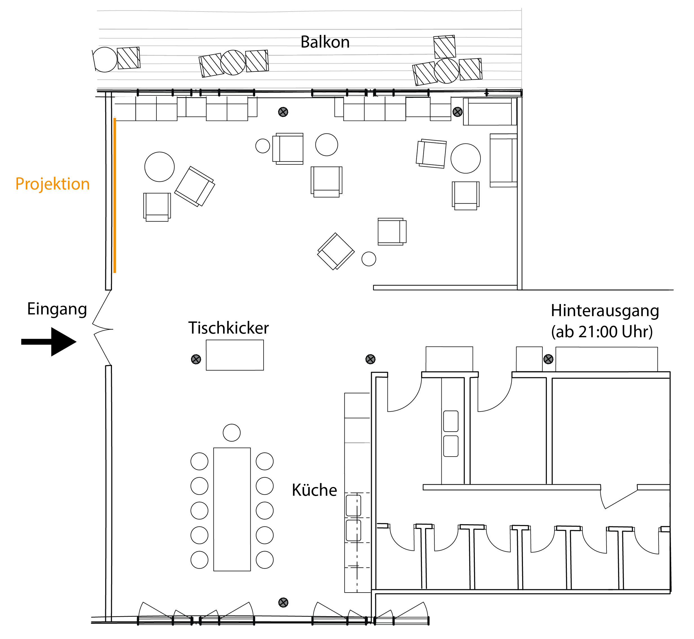
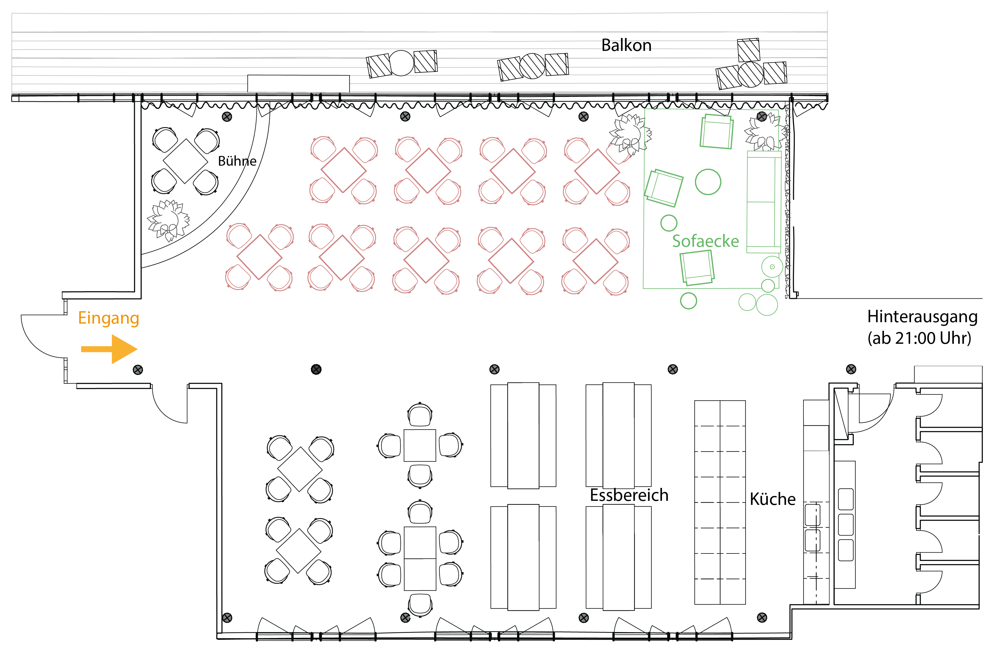
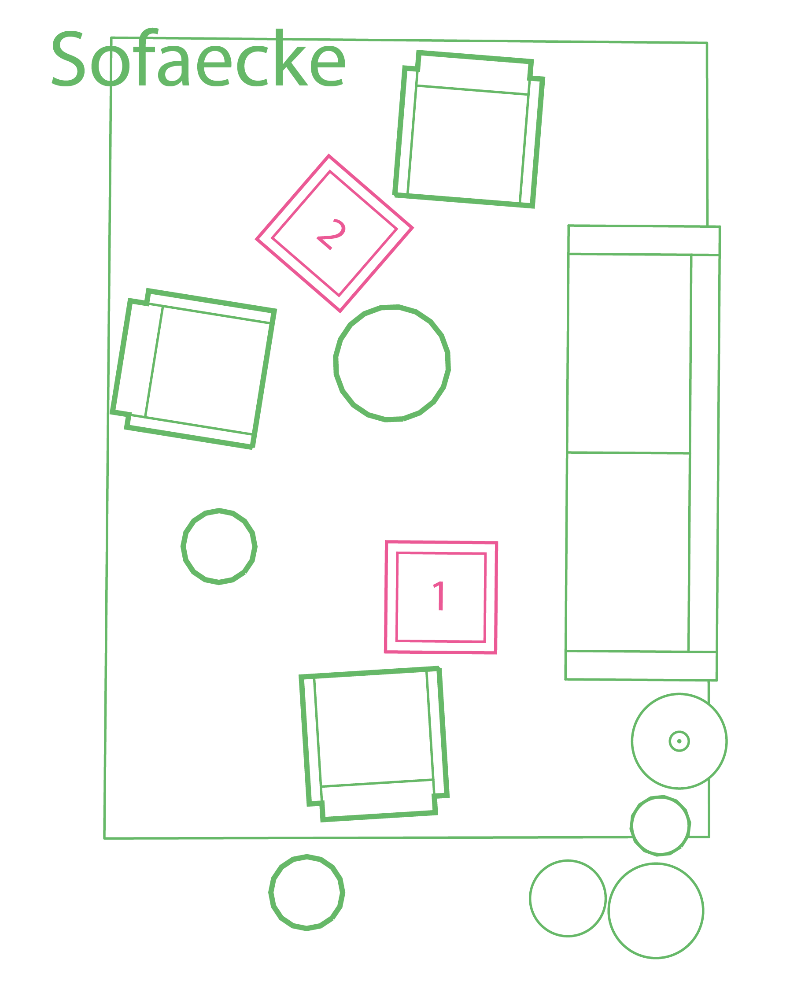
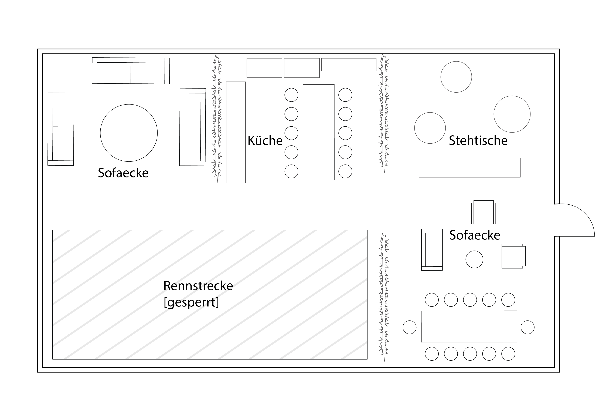
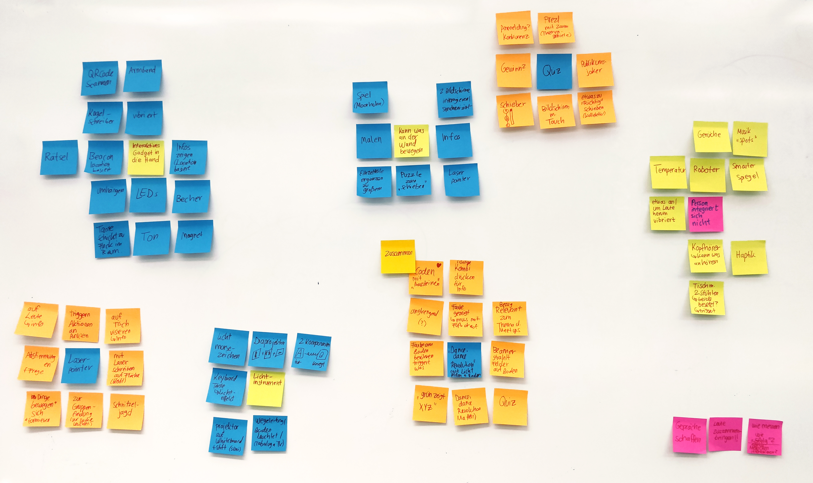

Research
The situation 'person does not integrate' was selected on the basis of a situation room analysis and a creative workshop using the lotus flower method.
Description of the rooms
Three spaces were evaluated. Netlight's previous Meetup event space, Netlight's future Meetup event space currently under renovation, and AWS (Amazon Web Services) event space in the Munich office.
There are sitting areas in all rooms that enable visitors to retreat. The spaces have kitchen areas that provided drinks and food. The majority of visitors spent their time standing in the area of the kitchen. For talks that took place during the rest of the Meetup, chairs facing the projection area were available to the visitors.
The former Meetup space of the company Netlight. This is where the following Meetup observations took place.The lounge chairs located in front of the projection were partially replaced with chairs facing the projection.

Room plan of the future Meetup space in the Netlight offices, which is still being renovated at the time the research is carried out. The tables marked in red will probably be replaced by rows of chairs facing the stage for Meetups.

Extract from the plan above. The sofa area seems most suitable for the position of the pressure plates (marked with 1 and 2).

The space for getting to know each other and arrival phase in the offices of the company Amazon Web Services Munich office spaces.

Meetup observations
A total of 4 Qualitative Observations were conducted in the Meetup spaces described. The aim is to identify and select a specific situation on the basis of which iterative prototypical approaches for unobtrusive interactive interfaces in Meetup situations are tested.
It could be observed that the crowd at the Meetups is spread out in the room. Seating, foosball, and food areas are all used. Conversation groups form, and at Meetups hosted by Netlight, single people are approached by hosts and initiated into conversation (with other people).
In contrast, at the AWS Meetup, some participating individuals who were supposedly alone engage in themselves, as no organizers jumped into the role of 'matchmakers'. These isolated individuals sat on armchairs or sofas away from the hustle and bustle, eating and drinking. A more frequently observed behavior was how isolated participants looked around, searching for a familiar face, strolling between the discussion groups, only to be again on their own at other quieter spots. This gave the impression of introverted personalities who felt uncomfortable placing themselves in the center of the activity or seeking direct contact with strangers. These participants could very well be picked up and engaged with the space , especially in quieter areas such as seating areas, and ideally brought into contact with other people.

Photo from an actual Meetup. In this case, an event hosted by CodePub in Munich, which is geared towards women in tech. The Meetup took place in the old Meetup space of Netlight. Here, the chairs in front of the projection screen were replaced by rows of chairs for a panel discussion.
Lotus Flower Method
The 'Lotus Flower Method', or 'Lotus Blossom Technique', is a creative method designed for groups and is used to deepen different solutions to a defined situation (for example, a problem or an idea). The method can be executed with small sticky notes.
In this process, a situation is placed as the center of a 3x3 matrix of sticky notes to generate ideas for a solution approach. The surrounding sticky notes are still blank. These sticky notes are now filled by the group with ideas on how to approach the situation. Subsequently, the (selected) ideas generated are placed in their own 3x3 matrices as a center point and again the empty slips of paper around them are filled with ideas. This process can now be repeated again if necessary.
The Lotus Flower method was conducted at Netlight with seven participants, including people with UX backgrounds and people who plan and/or host Meetups.
Since it was noticeable in the previous Meetup observations that there were visitors who did not actively participate in the social events of the Meetup, the situation was defined here as 'person does not integrate'. The method was used to find solutions to the problem of how to resolve this situation with the help of unobtrusive interactive interfaces.
The most interesting, and therefore most thoroughly considered by the method, were the ideas 'Laser pointer', 'Quiz' and 'Dance Dance Revolution with light fields on the floor'.

The result at the end of the workshop.
In the course of the workshop, participants also debated the situation 'person does not integrate', which was specified for the workshop. The participants were not asked to do this. In doing so, the recruiters participating in the workshop informed about the situation that they regularly put people in contact with each other at Meetups and thus integrate them through outside intervention. This further confirmed the situation assumed by the Meetup observations.